Chapitre 4 Analyses univariées
Nous avons appris à lire des données, à les manipuler, nous avons le droit d’être pressé de les représenter de manière immédiatement lisible, par des dataviz.
On présente d’abord rapidement le concept de grammaire des graphiques
On se concentre ensuite sur un cas d’étude
On décline.
4.1 La grammaire des graphiques
C’est sans doute une des percées conceptuelles laplus intéressante des datasciences. La représentation graphhiques des données fait l’objet à la fois d’une explosion créative mais aussi d’une synthèse théorique. C’est l’apport de la grammaire des graphiques.
Ces outils s’appuient sur l’idée de grammaire des graphiques. En voici un clair résumé.En français il y a toujours le larmarange
4.1.1 Un modèle en couche
Celle-ci met un ordre dans les éléments qui composent un graphique et les superpose.

layers
- l’aesthetic definit les éléments que l’on veut représenter : ce qu’on met en abscisse, ce qu’on met en ordonnné, les groupes que l’on veut distinguer.
- la geométrie (geom_x)qui définit la forme de représentation
- les échelles (scale_x)
- Labelisation (labs)
- les templates
- le facetting
ggplot est construit selon cette structure. Voici le book de référence, qui est au centre de ce cours. On aura besoin de manière assez systématique de manipuler les données avant de les représenter, dplyr nous permet de le faire aisément.
4.1.2 Une typologie des représentations
Un point de départ fondamental est la gallery de ggplot,, elle présente de manière synthétique la plupart les types de figures qui peuvent être représentées, avec du code facilement reproductible.
Une classification simple
- Analyse univariée
- Analyse bi variée
- Analyse multivariée ** les variables sont quantitatives : on analyse des matrices de corrélations ** les variables sont qualitatives : on analyse des tableaux croisés
- Analyse geospatiale
- Analyse de réseaux
- analyse d’arbres
- Diagramme de flux
4.1.3 L’esthétique
L’art des couleurs tient dans les palettes on aimera celles de Wes Anderson, on peut adorer fishualize. on trouvera
4.2 Une étude de cas
Les données sont extraites de l’ESS, une sélection est disponible ici. Elle couvre les 9 vagues et concernent la France et L’Allemagne. Les variables dépendantes (celles que l’on veut étudier et expliquer) sont les 9 items de la confiance, les variable considérées comme indépendantes (ou explicatives) sont une sélection de variables socio-démographiques : âge, genre, perception du pouvoir d’achat, orientation politique, type d’habitat.
On fait quelques opérations de recodage et on renomme les variables avoir une lecture plus aisée des variables et de leurs catégories. Le plan de recodage d’un jeu de données qu’on va employer dans les chapitres suivants. Il s’appuie sur le langage de base.
L’analyse univarié, comme son nom l’indique, ne s’intéresse qu’à une seule variable. Celle-ci peut être quantitative ou qualitative etne comporter qu’un nombre limité de modalités entre lesquels aucune comparaison de grandeur ne peut être faite. Les premières ont le plus souvent dans r un format numeric, les autres correspondent au format factor.
(Un exercice peut être de le réécrire avec dplyr.)
df<-readRDS("./data/trustFrAll.rds")
#quelques recodages
#on renomme pour plus de clarte
names(df)[names(df)=="trstun"] <- "NationsUnies"
names(df)[names(df)=="trstep"] <- "ParlementEurop"
names(df)[names(df)=="trstlgl"] <- "Justice"
names(df)[names(df)=="trstplc"] <- "Police"
names(df)[names(df)=="trstplt"] <- "Politiques"
names(df)[names(df)=="trstprl"] <-"Parlement"
names(df)[names(df)=="trstprt"] <- "Partis"
names(df)[names(df)=="pplhlp"] <- "help"
names(df)[names(df)=="pplfair"] <- "fair"
names(df)[names(df)=="ppltrst"] <- "trust"
#on construit les scores de confiance
df<-df %>%
mutate(trust_institut=(Partis+Parlement+Politiques+Police+Justice+NationsUnies+ParlementEurop)*10/7,trust_interpersonnel=(help+fair+trust)*10/3)
df$Year<-2000
#recodage des variables independantes
df$Year[df$essround==1]<-2002
df$Year[df$essround==2]<-2004
df$Year[df$essround==3]<-2006
df$Year[df$essround==4]<-2008
df$Year[df$essround==5]<-2010
df$Year[df$essround==6]<-2012
df$Year[df$essround==7]<-2014
df$Year[df$essround==8]<-2016
df$Year[df$essround==9]<-2018
df$Year<-as.factor(df$Year)
df$OP<-" "
#ggplot(df,aes(x=lrscale))+geom_histogram()
df$OP[df$lrscale==0] <- "Extrême gauche"
df$OP[df$lrscale==1] <- "Gauche"
df$OP[df$lrscale==2] <- "Gauche"
df$OP[df$lrscale==3] <- "Centre Gauche"
df$OP[df$lrscale==4] <- "Centre Gauche"
df$OP[df$lrscale==5] <- "Ni G ni D"
df$OP[df$lrscale==6] <- "Centre Droit"
df$OP[df$lrscale==7] <- "Centre Droit"
df$OP[df$lrscale==8] <- "Droite"
df$OP[df$lrscale==9] <- "Droite"
df$OP[df$lrscale==10] <- "Extrême droite"
#la ligne suivante est pour ordonner les modalités de la variables
df$OP<-factor(df$OP,levels=c("Extrême droite","Droite","Centre Droit","Ni G ni D","Centre Gauche","Gauche","Extrême gauche"))
df$revenu<-" "
df$revenu[df$hincfel>4] <- NA
df$revenu[df$hincfel==1] <- "Vie confortable"
df$revenu[df$hincfel==2] <- "Se débrouille avec son revenu"
df$revenu[df$hincfel==3] <- "Revenu insuffisant"
df$revenu[df$hincfel==4] <- "Revenu très insuffisant"
df$revenu<-factor(df$revenu,levels=c("Vie confortable","Se débrouille avec son revenu","Revenu insuffisant","Revenu très insuffisant"))
df$habitat<-" "
df$habitat[df$domicil==1]<- "Big city"
df$habitat[df$domicil==2]<-"Suburbs"
df$habitat[df$domicil==3]<-"Town"
df$habitat[df$domicil==4]<-"Village"
df$habitat[df$domicil==5]<-"Countryside"
df$habitat<-factor(df$habitat,levels=c("Big city","Suburbs","Town","Village","Countryside"))
df$genre<-" "
df$genre[df$gndr==1]<-"H"
df$genre[df$gndr==2]<-"F"
df$age<-" "
df$age[df$agea<26]<-"25<"
df$age[df$agea>25 & df$agea<36]<-"26-35"
df$age[df$agea>35 & df$agea<46]<-"36-45"
df$age[df$agea>45 & df$agea<66]<-"46-65"
df$age[df$agea>65 & df$agea<76]<-"66-75"
df$age[df$agea>75]<-"75>"
df$age<-factor(df$age,levels=c("25<","26-35","36-45","46-65","66-75", "75>"))
saveRDS(df, "./data/dfTrust.rds)")
foo<-df%>%
dplyr::select(Year,cntry, trust_institut, trust_interpersonnel)%>%
group_by(Year,cntry)%>%
summarise(trust_institut=mean(trust_institut, na.rm=TRUE),
trust_interpersonnel=mean(trust_interpersonnel, na.rm=TRUE))
foo$Year<- as.character(foo$Year)
foo$cntry<- as.character(foo$cntry)
foo<-foo%>%pivot_longer(!c(Year,cntry),names_to="Trust", values_to="value" )
ggplot(foo,aes(x=Year, y=value, group=Trust))+
geom_line(stat="identity",aes(color=Trust), size=1.2)+
facet_wrap(vars(cntry))+
scale_color_manual(values = c("Cyan3","Orange2"))+ theme(
legend.position = "bottom",
legend.justification = c("right", "top"),
legend.box.just = "right",
legend.margin = margin(6, 6, 6, 6)
)+ labs(x=NULL, y="Niveau")+ylim(40,60)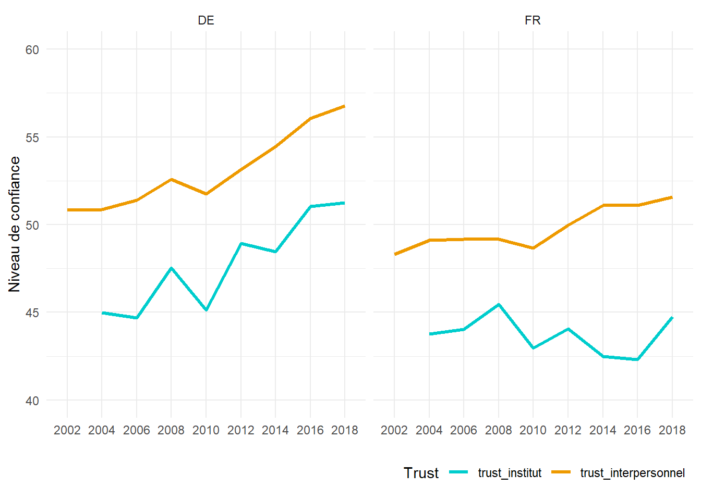
4.2.1 Le cas des variables quantitatives
Les variables quantitatives décrivent une variable dont les valeurs décrivent les quantités d’une grandeur. Elle peuvent être discrètes (dénombrement du d’un nombre d’unités) - le nombre d’habitant), ou continue (le nombre de km parcourus). l’histogramme est l’outil de base pour représenter la distribution d’une telle variable. Il représente pour des intervalles de valeurs donnés, la fréquence des observations.
Sa syntaxe simple comporte d’abord la définition de la variable et de la source de données, puis une des “géométrie” de ggplot : la fonction geom_histogram. Dans notre exemple, on va représenter le score de confiance institutionnelle pour la France en se concentrant sur la dernière vague d’enquête.
#On charge le fichier recodé à la fin du chapitre précédent
df<-readRDS("./data/dfTrust.rds)")
#filtrage sur 2018 et la France.
foo<-df%>%
filter(Year=="2018" & cntry=="FR" & !is.na(trust_institut))
# on stocke le diagramme dans l'objet g00, pour le réutiliser ultérieurement et pouvoir le compléter.
g00<-ggplot(foo,aes(x=trust_institut))+
geom_histogram()
g00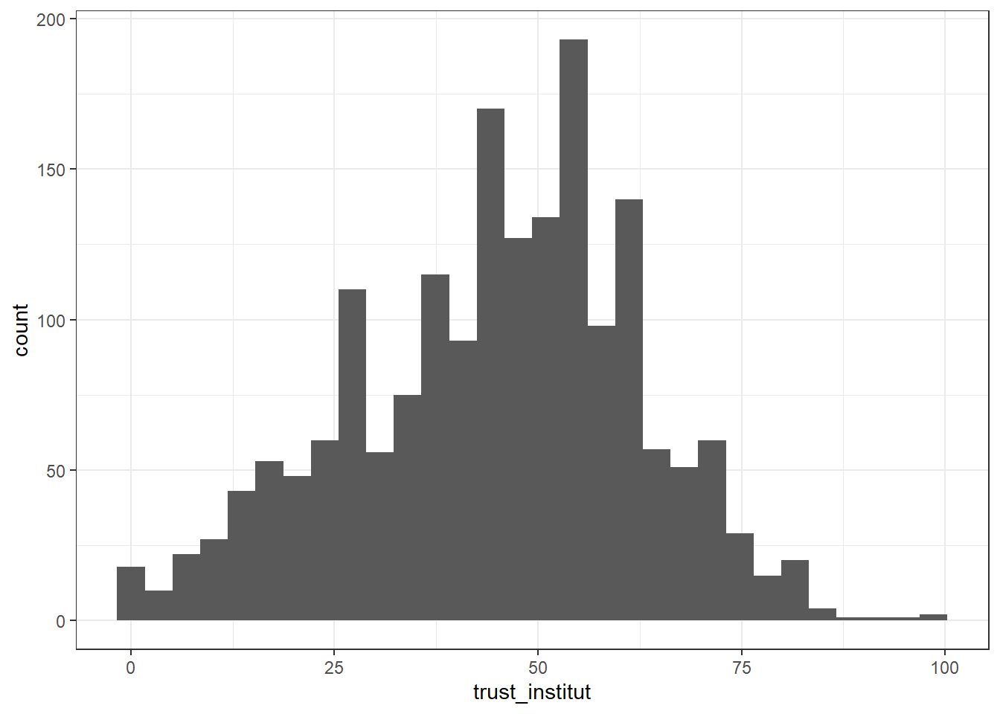
g00+labs(title="Distribution de la confiance institutionnelle en France et en 2018",
x="Confiance institutionnelle")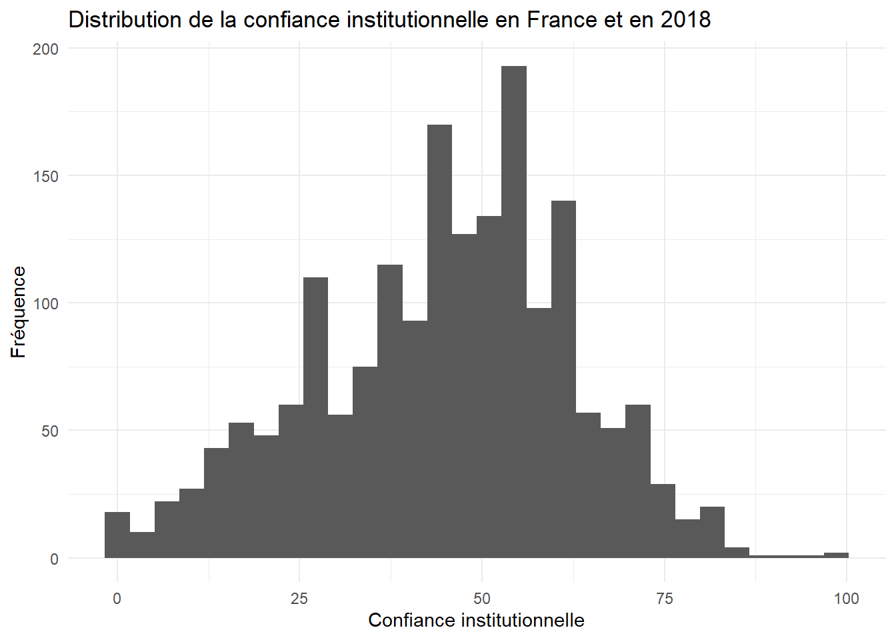
On va améliorer l’aspect en
- modifiant la couleur et la largeur des barres,
- ajoutant un thème,
- en précisant les éléments textuels (titres, label)
- en calculant et en représentant la valeur moyenne et l’écart-type . Pour ces statistiques, on emploie les fonction de base : mean, sd et round.
On notera que le titre est défini par la concaténation de plusieurs chaines de caractères avec la fonction paste0. On peut ainsi injecter dans le graphique des éléments externes au jeu de données.
#on calcule la moyenne
moy=mean(foo$trust_institut, na.rm=TRUE)
sd=sd(foo$trust_institut, na.rm=TRUE)
#avec tous les éléments
g01 <-ggplot(foo,aes(x=trust_institut))+
geom_histogram(binwidth=5,fill="pink")+
labs(title= "Distribution de la confiance institutionnelle",
subtitle= paste0("moyenne = ",round(moy,2), " ecart-type = ", round(sd,2)),
caption="ESS2002-2018",
y= "frequence",
x="confiance (index de 0 à 100)")+
geom_vline(xintercept=moy, color="red",size=1.5)+
geom_segment(y = 0, yend=0,x=moy-sd,xend=moy+sd, color="orange",size=1.5)
g01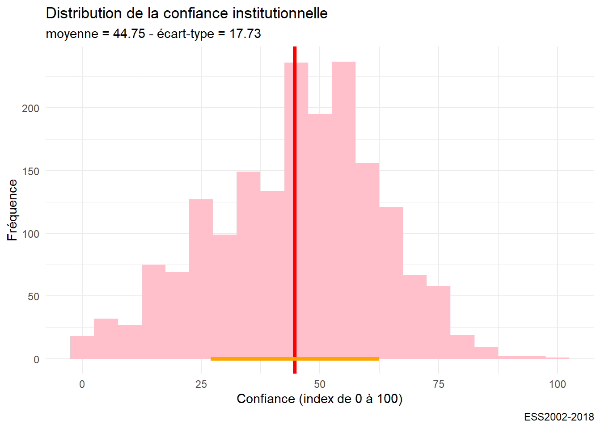
Diagramme de densité : Au lieu de représenter les effectifs, on ramène l’effectif total à 1.
g04<-ggplot(foo,aes(x=trust_institut))+
geom_density(fill="pink2") +
labs(title= "Fonction de densité de probabilité", caption="ESS2002-2018",y= "frequence",x="Confiance (index de 1 à 100)")
g04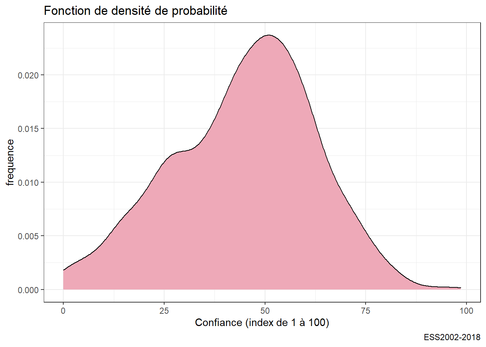
enfin on peut examiner par rapport à une distribution théorique, en l’occurrence une distribution gaussienne, ou normale, de paramètres égaux à la moyenne et la variance empirique de la distribution. L’ajustement est convenable même si on observe une déviation sur la droite. C’est pourquoi on calcule aussi la Kurtosis et le skewness de la distribution.
#On a déjà calculé la moyenne : mean
#il nous manque l'écart-type et
sd<-sd(foo$trust_institut, na.rm=TRUE)
library(moments)
sk<-skewness(foo$trust_institut)
ks<-kurtosis(foo$trust_institut)
g05<-ggplot(foo,aes(x=trust_institut))+
labs(title= "Distribution de la confiance institutionnelle", caption="ESS2002-2018",y= "frequence",x="confiance (index de 0 à 100)") +
geom_density(fill="pink2")+
stat_function(fun = dnorm,color="red",size=1.2, args = list(mean =moy, sd=sd))
g05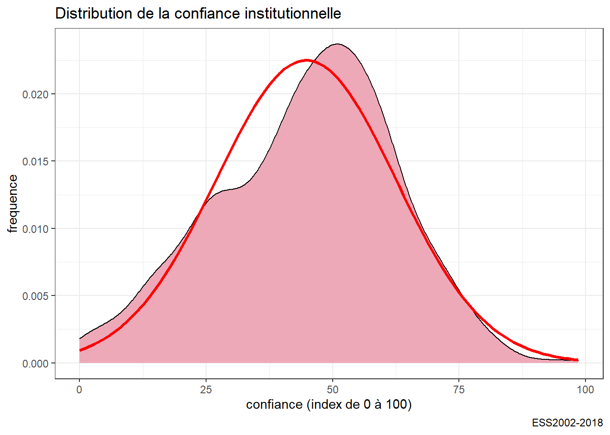
Un grand classique du test de normalité d’une distribution est le diagramme QQ
g06 <- ggplot(foo, aes(sample = trust_institut)) +
stat_qq() + stat_qq_line()+
labs(title= "QQplot confiance interpersonnelle", caption="ESS2002-2018",y= "Echantillon",x="Théorique")
g06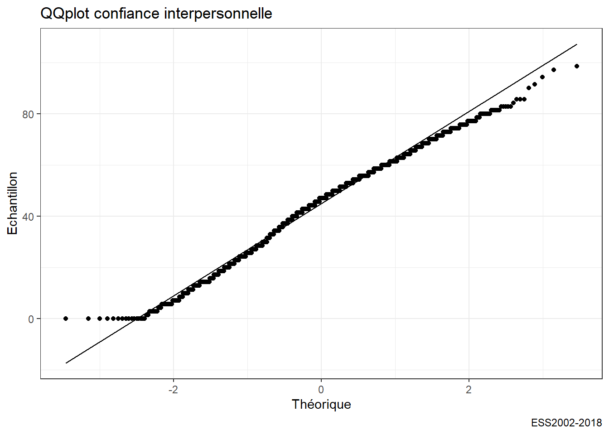
On fini cette étude détaillée par l’ajustement d’abord d’un modèle (loi normale) aux données. Ensuite d’un modèle de mélange ( Mixture model) par lequel on défiit la loi de distribution sous jascente, comme un mélange entre deux populations normale de paramètres distincts.
https://tinyheero.github.io/2015/10/13/mixture-model.html
df0<-df %>% na.omit()
library(MASS)
fit<-fitdistr(df0$trust_interpersonnel,"normal")
fit## mean sd
## 52.48548790 16.57617220
## ( 0.09344363) ( 0.06607462)g07<- g05+stat_function(fun = dnorm ,color="orange",size=1.2, args = list( mean=52.48, sd=16.57))
g07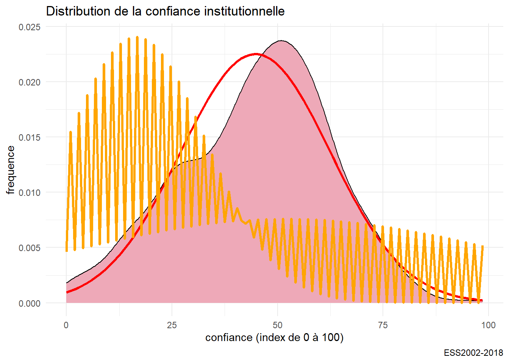
library(mixtools)
trust = foo$trust_institut
mixmdl = normalmixEM(trust, k=2)## number of iterations= 503mixmdl$mu## [1] 39.23071 56.04167mixmdl$sigma## [1] 17.90246 10.56093mixmdl$lambda## [1] 0.67195 0.32805plot(mixmdl,which=2)
lines(density(trust), lty=2, lwd=2)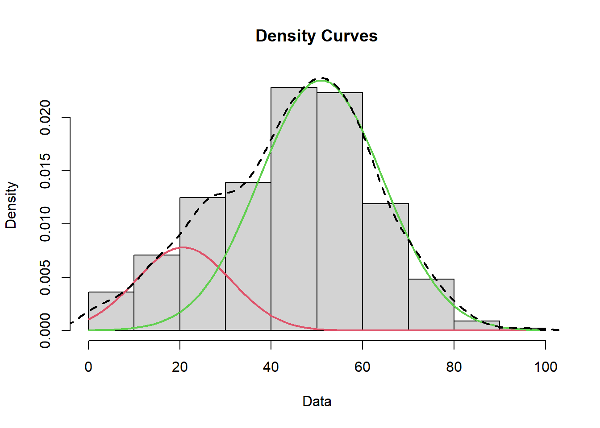
Finalement si notre distribution est univariée, car n’étudiant qu’une variable, on peut quand distinguer deux population distinctes.
4.2.1.1 D’autres méthodes
Il n’y a pas que l’histogram ou le diagramme de densité, d’autres méthodes sont utiles, surtout quand on veut comparer des groupes ( ce sera l’objet du prochain chapitre). Il s’agit du diagramme à moustache et du diagramme en violon.
g0306 <- ggplot(foo, aes(y = trust_institut, x=1)) +
geom_boxplot(fill="Grey")
g0307 <- ggplot(foo, aes(x=1,y = trust_institut)) +
geom_violin(fill="Gold") + labs(x="density")
plot_grid(g0306, g0307, labels = c("Boxplot","Violin plot"),
label_size = 12
)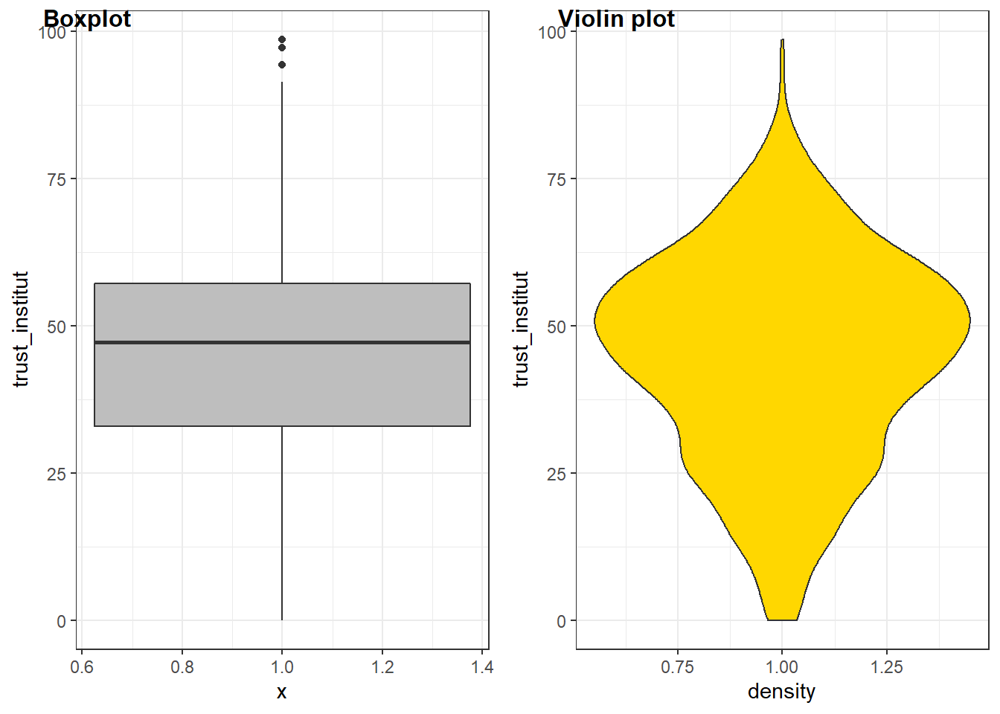
4.2.2 Quand la variable est qualitative
Quand la variable est qualitative, que ses variables sont discrètes, la manière de représenter la plus commune est le fameux camembert que les experts écartent. Un diagramme en barre représente mieux les proportions.
Un premier exemple pour représenter les vagues d’enquêtes
g08<-ggplot(df,aes(x=age))+
geom_bar(fill="skyblue")+
labs(title= "Distribution par classe d'âge", caption="ESS2002-2018",y= "frequence",x="Vague d'enquête")
g08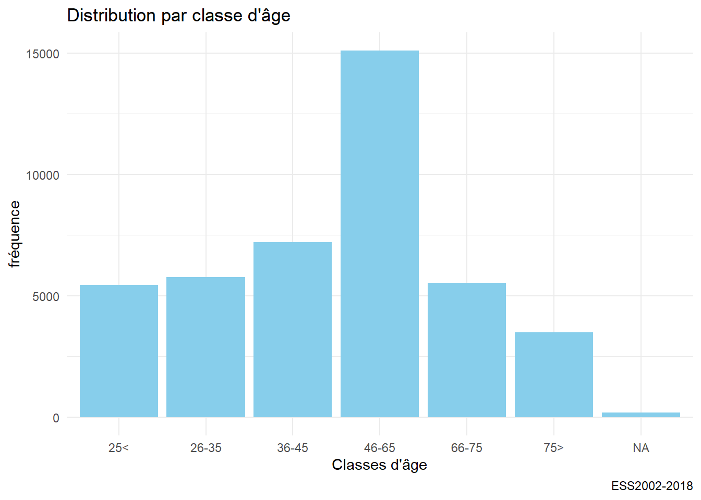
Avec quelques améliorations : contôle de la couleurs des barres, ajout des % et pivot pour une meilleure lecture.
foo<-df %>%
filter(!is.na(age))
g10<-ggplot(foo,aes(x=age, y = prop.table(stat(count)),label = scales::percent(prop.table(stat(count)))))+
geom_bar(aes(fill = age)) +
coord_flip()+
labs(title= "Répartition de la population par classe d'âge", caption="ESS2002-2018",y= "%",x="classes d'age") +
scale_y_continuous(labels = scales::percent)+ #contrôle de l'échelle des % et du format
scale_fill_brewer()+
geom_text(stat = 'count',position = position_dodge(.9), hjust = 1, size = 3)
g10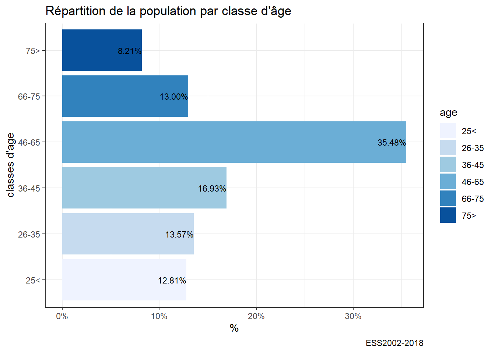
si on tient au diagramme en secteur
foo<-df %>%filter(!is.na(age))
g10<-ggplot(foo,aes(x="", y = prop.table(stat(count)),label = scales::percent(prop.table(stat(count)))))+
geom_bar(aes(fill = age)) +
labs(title= "Répartition de la population par classe d'âge", caption="ESS2002-2018",y= "%",x="classes d'age") +
geom_text(stat = 'count',position = position_dodge(.9), hjust = 1, size = 3) +
coord_polar("y", start=0)
g10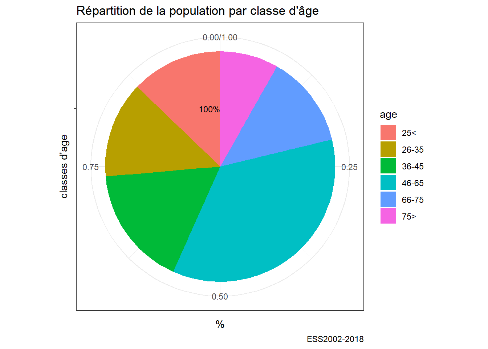 https://cran.r-project.org/web/packages/treemapify/vignettes/introduction-to-treemapify.html
si on tient au diagramme en cercle, autant opter pour un treemap avec la bibliothèque treemapifi
library(treemapify)
tree1<-df %>%
mutate(n=1)%>%group_by(age) %>%
summarize(n=sum(n)) %>%
filter(!is.na(age))
g11 <- ggplot(tree1, aes(area = n, fill=n),label=age) +
geom_treemap() +
geom_treemap_text(aes(label=age),colour = "white", place = "centre",grow = FALSE)+
labs(title= "Répartition de la population par classe d'âge", caption="ESS2002-2018",y= NULL,x=NULL)
g11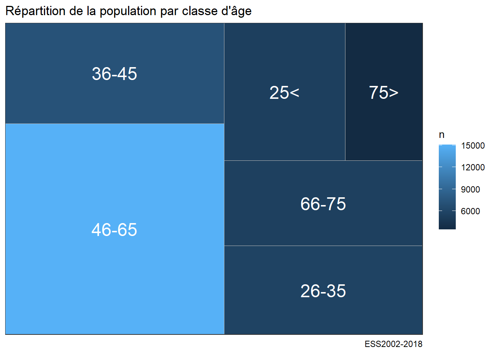